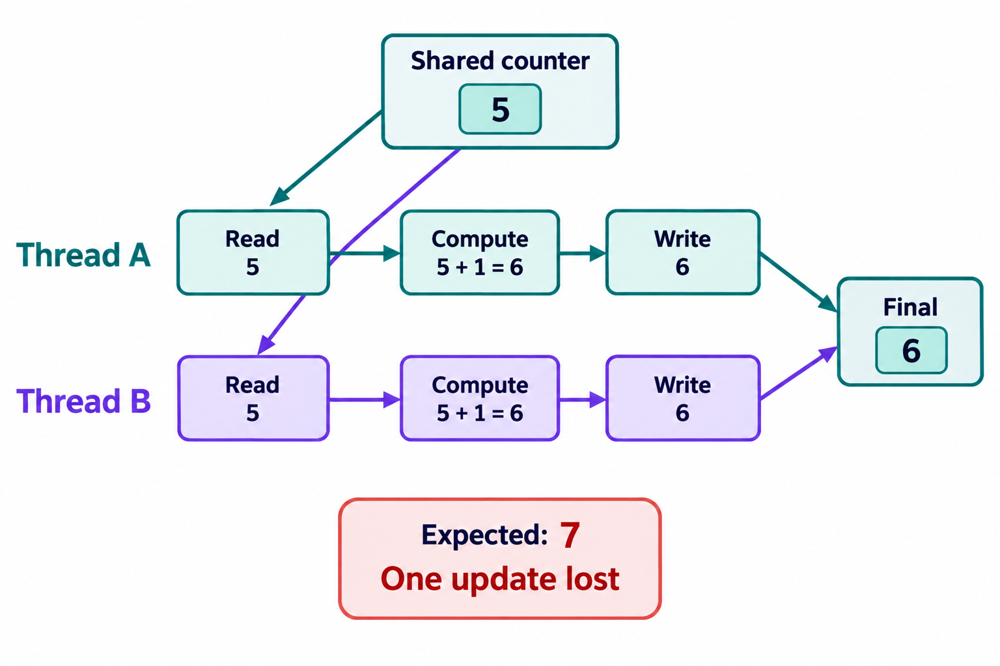

The most common concurrency bug in real code is not exotic. It is two threads adding one to the same number, and the number going up by one instead of two.
In plain words
Picture a cricket scorer and an assistant sharing one scoreboard. A four is hit. The scorer reads the board (120), turns to write 124, and in that moment the assistant, who also saw the four, reads the board (still 120) and writes 124 too. Two people did their job correctly, and the score is still wrong: one boundary has vanished.
Nothing was broken in either person's steps. The problem was the gap between reading the board and writing it back, and the fact that someone else could slip into that gap. That is a lost update.
One line of code, three steps
count += 1 (or count++) looks like one action. The machine does three:
- Read the current value of
countfrom memory into a register. - Modify it: add one, inside the register.
- Write the register back to memory.
Each step is fine on its own. But between step 1 and step 3, another thread can run its own step 1 and read the same old value. This shape, read a shared value, compute, write it back, is called a read-modify-write, and every read-modify-write on shared state is a race condition unless something makes the three steps indivisible. Making a group of steps indivisible is what atomicity means.

See it happen
Here are two threads, each adding one to a shared counter 100,000 times. The right answer is 200,000. Run it a few times.
#include <iostream> #include <thread> int count = 0; // shared by both threads, no protection int main() { auto work = [] { for (int i = 0; i < 100000; i += 1) { count += 1; // read, add, write: three steps, and a data race } }; std::thread a(work); std::thread b(work); a.join(); b.join(); std::cout << "count = " << count << " (expected 200000)\n"; }
public class Main { static int count = 0; // shared by both threads, no protection public static void main(String[] args) throws InterruptedException { Runnable work = () -> { for (int i = 0; i < 100_000; i += 1) { count += 1; // read, add, write: three steps } }; Thread a = new Thread(work, "adder-a"); Thread b = new Thread(work, "adder-b"); a.start(); b.start(); a.join(); b.join(); System.out.println("count = " + count + " (expected 200000)"); } }
count = 113872 (expected 200000)
In Java you will usually see a number well short of 200,000, and a different one on every run. In C++ the output can even look right sometimes, but ThreadSanitizer reports a data race on every run, because the bug is there whether or not this run got unlucky. That is the first lesson of this module: a racy program that printed the right answer is still a broken program.
Why so many updates vanish, not just one or two
Two effects stack up. First, the threads really do interleave between read and write, millions of times a second. Second, because nothing tells the compiler that other threads exist, it is allowed to keep count in a register for a while and write it back later, so one "late" write can erase thousands of the other thread's increments in one go. In C++ an unsynchronized conflicting access is undefined behavior, so the compiler may transform the loop even more aggressively.
The same bug wears many shapes
Train your eye to spot the pattern, not the syntax. Every one of these is a read-modify-write on shared state:
| Code | What gets lost |
|---|---|
hits += 1 on a shared field | Some hits are never counted |
balance -= amount on a shared account | A withdrawal disappears, so money is created out of nothing |
map.put(key, map.get(key) + 1) | Word counts come out too low |
max = Math.max(max, x) or best = std::max(best, x) | A larger value is overwritten by a smaller one |
list.add(x) on an ArrayList, or v.push_back(x) on a std::vector | Worse than a lost item: the size and the storage can disagree, which corrupts the structure itself |
Three ways to fix it
Every fix does the same thing: it makes read, modify and write happen as one indivisible step, or it removes the sharing.
Fix 1: an atomic operation
The hardware can do read, add, write as one instruction that no other core can split. An atomic variable exposes it.
#include <atomic> #include <iostream> #include <thread> std::atomic<int> count{0}; int main() { auto work = [] { for (int i = 0; i < 100000; i += 1) { count.fetch_add(1); // one indivisible read, add, write } }; std::thread a(work), b(work); a.join(); b.join(); std::cout << "count = " << count.load() << "\n"; }
import java.util.concurrent.atomic.AtomicInteger; public class Main { static final AtomicInteger count = new AtomicInteger(); public static void main(String[] args) throws InterruptedException { Runnable work = () -> { for (int i = 0; i < 100_000; i += 1) { count.incrementAndGet(); // one indivisible read, add, write } }; Thread a = new Thread(work), b = new Thread(work); a.start(); b.start(); a.join(); b.join(); System.out.println("count = " + count.get()); } }
count = 200000
Use this when the shared state is one variable and the operation is one of the things atomics can do: add, exchange, compare-and-set.
Fix 2: a lock around the whole read-modify-write
A mutex lets one thread at a time into a critical section. Put the entire read, modify, write inside it.
#include <mutex> class Counter { public: void increment() { std::lock_guard<std::mutex> guard(m_); count_ += 1; // read, add, write, with no thread in between } long get() const { std::lock_guard<std::mutex> guard(m_); return count_; // reads take the same lock too } private: mutable std::mutex m_; // mutable, so the const get() can lock it long count_ = 0; // guarded by m_ };
class Counter { private final Object lock = new Object(); private long count = 0; // guarded by lock void increment() { synchronized (lock) { count += 1; // read, add, write, with no thread in between } } long get() { synchronized (lock) { return count; // reads take the same lock, so they see the latest write } } }
Use a lock when the update touches more than one variable that must stay consistent (a balance and a transaction log, a map and its size), or when the operation is more than an atomic can express. Notice that the read in get() takes the lock too. Skipping the lock on reads is a classic mistake; you will see why in the memory model module.
Fix 3: do not share
Give each thread its own counter and add them up at the end. No sharing means no race and no contention. Java's LongAdder does a smarter version of this internally, which is why it beats AtomicLong for counters that many threads hit at once. You will build this idea properly in counters at scale.
Worked example: which fix for which job
A request counter for metrics, hit by 64 threads. One variable, write heavy, nobody needs an exact value at every instant: LongAdder in Java, per-thread counters or std::atomic with fetch_add in C++.
A bank account with withdraw(amount) that must never go below zero. This is a read (check the balance), a decision, and a write. An atomic add cannot express "only if there is enough", so either a lock around check and update, or a compare-and-set loop that retries. You will meet the check part of this bug in the next lesson.
A word count over a big file split across 8 threads. Do not share at all: each thread counts its own chunk into its own map, and you merge the 8 maps at the end.
Common mistakes
- "I made it volatile, so it is safe." In Java,
volatilemakes writes visible to other threads; it does not makecount += 1one step. Two threads still read the same value. In C++,volatilehas nothing to do with threads at all; usestd::atomic. - Locking only the writes. If
get()reads without the lock, it can see a stale value, and in C++ it is a data race. All access to guarded state takes the same lock. - Using two different locks for the same variable. One method locks
this, another locks a different object. Each lock is real, but they do not exclude each other. - "It passed my test, so it is fine." Races depend on timing. Run under stress and, in C++, under ThreadSanitizer. One clean run proves nothing.
- Atomic pieces, non-atomic whole.
if (count.get() < limit) count.incrementAndGet();uses an atomic, but the check and the add are still two steps. That is the next lesson.
In the interview
The question usually arrives as "is this counter thread-safe?" with a count++ in it, or as a follow up to a coding problem: "now many threads call record()." The interviewer wants three things: that you see the three steps, that you name the outcome (lost updates), and that you pick a fix for a reason.
No,count++is a read-modify-write: two threads can read the same value and one increment overwrites the other. For a single counter I would use an atomic increment, orLongAdderif many threads hit it at once. If the update has to keep two fields consistent, I would put the whole read-modify-write under one lock, and take the same lock for reads.
Follow ups to expect: "What is the smallest value two threads incrementing n times can produce?" (see the quick check), "Would volatile help?" (no, and say why), and "How would you test it?" (many threads, many iterations, check the exact total, and ThreadSanitizer in C++).
Senior depth
The same bug happens between machines. A service that does SELECT balance and then UPDATE accounts SET balance = ? has a read-modify-write across two network round trips, and two concurrent requests lose an update exactly like two threads. The fixes are the same ideas, one level up: an atomic statement (UPDATE ... SET balance = balance - 10 WHERE id = ? AND balance >= 10), a row lock, or an optimistic version check. You will see these in optimistic versus pessimistic concurrency control. Saying "this is the lost update problem, and here it is in the database" is a strong senior signal.
Key takeaways
count += 1is three steps: read, modify, write. Another thread can slip into the gap.- Any read-modify-write on shared state is a race unless the whole span is made atomic.
- Fix it with an atomic for one variable, a lock when several variables move together, or by not sharing.
volatiledoes not fix it. A clean test run does not prove it is fixed.- The same lost update happens in databases, and the fixes map one to one.
Quick check
int x = 0. Each runs x += 1 exactly 5 times, with no synchronization. What is the smallest final value of x that is possible?balance starts at 100. Thread A runs balance -= 10 and thread B runs balance -= 20, with no synchronization. Which final values are possible? Select all that apply.Select all that applyvolatile gives visibility, not atomicity. Prefix and postfix increments are both read-modify-write, and static changes nothing about sharing.ConcurrentHashMap option is the trap: each call is thread-safe, but the get followed by the put is still a read-modify-write across two calls. merge(k, 1, Integer::sum) would make it atomic.volatile int count; and two threads each call count++ 1,000 times. What happens?volatile guarantees visibility and ordering for that field, so readers see the latest write. It does not stop two threads from reading the same value before either writes. Use AtomicInteger or a lock.count += 1 on a plain int with no synchronization. What does the C++ standard say?volatile is not a synchronization tool in C++.deposit() method updates both balance and history (a list of transactions). Which fix is right?Checkpoint
hits++ in a service that handles 10,000 requests a second on 32 threads and asks: "Is this fine? What would you use instead?" Answer as you would out loud.It is not fine. hits++ is a read-modify-write: two threads can read the same value, both add one, and one write erases the other, so the counter drifts low under load, and in C++ it is a data race, which is undefined behavior. Because it is a single variable, I would use an atomic increment. With 32 threads hammering one counter, a single atomic becomes a contention hot spot, because every increment fights over one cache line, so in Java I would use LongAdder, which spreads increments over several cells and sums them on read; in C++ I would use per-thread counters or a sharded set of atomics, and sum on read. If the count had to stay consistent with another field, I would use a lock around both instead.
x += 1 five times on a shared x = 0, with no synchronization. Write out an interleaving, step by step, that ends with x = 2.- A reads 0 into its register and is paused.
- B runs four complete increments: x goes 1, 2, 3, 4.
- A adds 1 and writes 1. (x is 1; B's four increments are gone.)
- B reads 1 for its fifth increment and is paused.
- A runs its remaining four increments: x goes 2, 3, 4, 5.
- B adds 1 to the 1 it read and writes 2.
Final value: 2. The key move is that each thread's last write is based on a value read long before, so it can erase almost all of the other thread's work.
HitCounter class with hit() (called by many threads) and total(), in your language. Then say in one sentence why you chose your primitive.#include <atomic> class HitCounter { public: void hit() { hits_.fetch_add(1, std::memory_order_relaxed); // only the count matters, not ordering } long total() const { return hits_.load(std::memory_order_relaxed); } private: std::atomic<long> hits_{0}; };
import java.util.concurrent.atomic.LongAdder; class HitCounter { private final LongAdder hits = new LongAdder(); void hit() { hits.increment(); // contention spread over several cells } long total() { return hits.sum(); // exact once all hits have returned } }
Why: it is one variable updated by many threads, so an atomic or striped counter beats a lock. LongAdder avoids every thread fighting over one cache line, and in C++ a relaxed atomic is enough because nothing else depends on the order of the increments.
Say it out loud
count++ is fine because it is one line of code. Walk me through why it can lose updates, and what you would use instead."count++is three steps: read the value, add one, write it back- A concrete interleaving: both threads read 5, both write 6, one increment is gone
- The cost: the count drifts low under load, and how low it can go is surprising
- In C++ it is a data race, so undefined behaviour; in Java it is defined but still loses updates
- The fix: an atomic increment for one variable, a lock when an invariant spans several fields
- Under heavy contention: LongAdder in Java, sharded or per thread counters in C++
count++ reads the value, adds one, and writes it back. If two threads both read 5, both compute 6 and both write 6, one increment has vanished, and under real load the count drifts low. In C++ it is worse than wrong numbers: two unsynchronized writes are a data race, which is undefined behaviour. For a single counter I would make the increment atomic: AtomicLong.incrementAndGet in Java, fetch_add on a std::atomic in C++. If the counter has to stay consistent with another field, I would put both under one lock instead. And if many threads hammer it, I would use LongAdder or per thread counters that are summed on read, because one atomic becomes a contention hot spot.Likely follow up: Would making the field volatile fix it?
- Atomic: one variable, one indivisible operation (increment, swap, compare and set)
- Lock: an invariant across two or more variables, or a compound check then act
- Atomics do not compose: two atomic operations in a row are not atomic together
- Contention: both slow down when many threads fight; striping or sharding helps either
- Say which you would pick for the example in front of you, and why
Likely follow up: When would a compare and set loop be better than a lock?